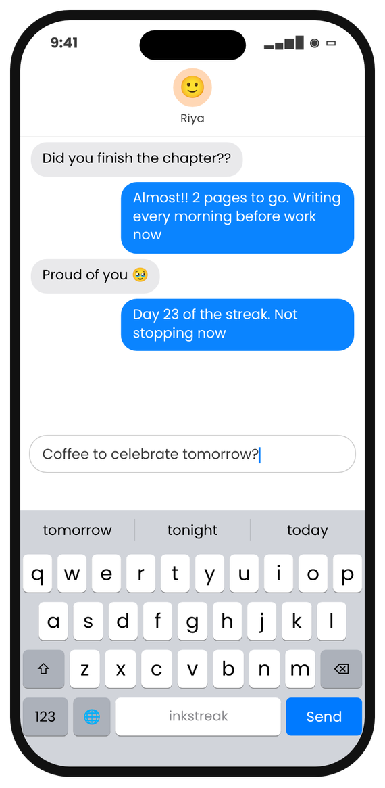

For writers
Hit your daily word count
Inkstreak counts every word you type on your iPhone — in any app — so you always know where you stand. No logging, no spreadsheets.
Coming to the App Store7 days free, then $7.99/month or $49.99/year.

Count
Every word counts — automatically
Write in Notes, Google Docs, Mail or anywhere with the Inkstreak keyboard.
- Words today and your streak
- Any day or date range
- Where you wrote most

Focus
A distraction-free page
Full-screen focus mode for drafting scenes, chapters or ideas.
- Headlines and folders
- Share a passage as a card

Questions
Can I track a 50,000-word November?
Yes — that's 1,667 words a day. Your daily total and streak are on the Stats tab; look back at any date range to see the month.
Does it count words I write on a computer?
Version 1 counts on iPhone. Words you write in Inkstreak or with the Inkstreak keyboard all count.

Keep writing human.
7 days free, then $7.99/month or $49.99/year. No account. No ads.
Launching on the App Store very soon. Follow along: get an email when it's out.